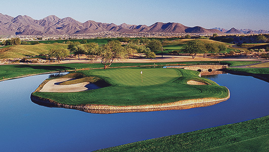
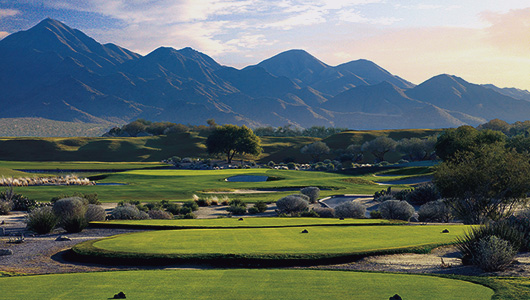

PGA Tour에서 직접 운영하는 뛰어난 우수성을 가진 골프 코스
PGA TOUR ‘Waste Management Phoenix Open’ 개최지
소노라 사막에 자리 잡은 이곳은 장엄하고 웅장한 맥도웰 산맥에 둘러싸여 매우 인상적인 곳으로 TPC 네트워크에서 운영할 만큼 대회 코스로써 뛰어난 우수성을 가진 코스이다.

제이 모리쉬와 톰 바이스코프가 디자인한 스타디움 코스는 PGA 투어 ‘웨이스트 매니지먼트 피닉스 오픈’ 의 홈 경기가 열리는 곳으로, 1986년 오픈 이래 오늘날 세계적으로 유명한 수많은 경기를 치른 화려한 이력을 갖고 있으며 특히 16번 파 3홀은 ‘세계에서 가장 시끄러운 홀’로 2만 관중들이 열광할 수 있는, 골프경기에서 유일하게 스타디움을 이루는 홀로 너무나도 유명하다.
또한 랜디 헤큰켐퍼가 디자인한 챔피언십 코스는 가장 이상적인 사막 골프를 경험할 수 있는 코스로, 2007년에 진행된 대규모 재개발로 고원과 협곡 사이로 굽이치는 기복이 심한 지형을 매끄럽게 다듬고 새로운 레이아웃을 완성했다.

북미 50대 리조트 리스트에 이름을 올린 티피씨 스캇데일은 AAA 다이아몬드 5개 등급 페어몬트 스캇데일 프린세스 호텔과 인접하여 골프 패키지를 이용할 수 있으며, 스캇데일의 다이닝과 화려한 밤 문화, 고품격 쇼핑, 테마파크까지 즐길 수 있는 곳에 있어 골프 여행에 다양한 색을 입힐 수 있는 옵션을 제공한다.
Travel Tip
클럽하우스 내의 토로 레스토랑 & 럼 바는 셀러브리티 쉐프 리처드 샌도발과의 콜라보로 운영되어 수준 높은 요리를 선보이며, 150여 종의 럼을 갖춘 지역 최고의 럼 바로, 럼 애호가라면 반드시 방문해볼 것을 권유한다.
토로 레스토랑의 야외 테라스는 18번 홀 뒤로 펼쳐지는 애리조나의 황홀한 일몰로 유명하여, 사전 예약이 필수이다.